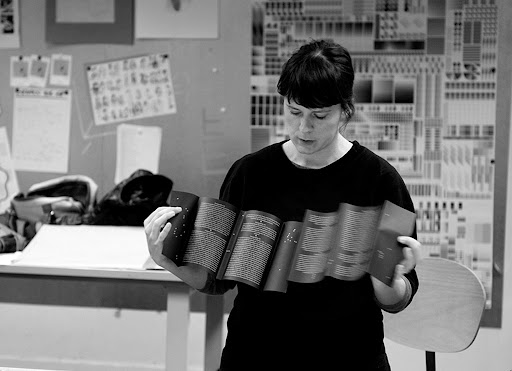

Ses principales activités sont centrées sur la typographie et la mise en page, les liens entre édition et graphisme, essentiellement dans le domaine culturel. Son travail s’articule entre projets de commande et de recherche, et expérimente l’objet imprimé.
